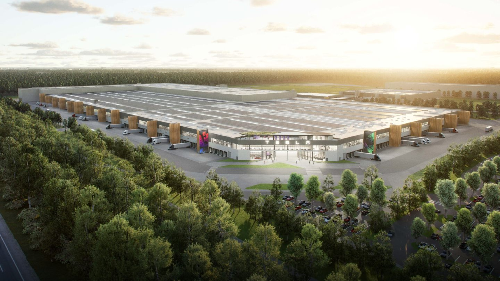
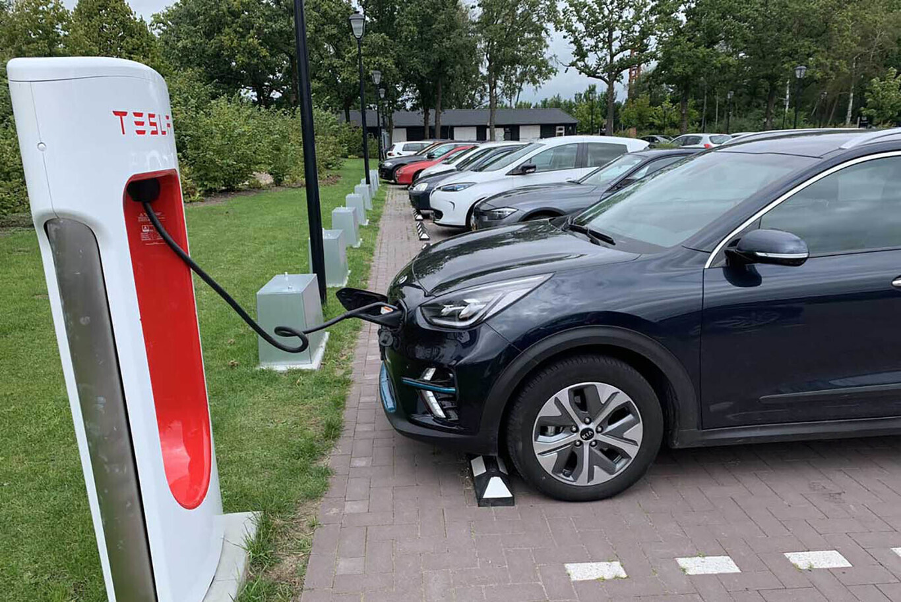

La Gigafactoría europea de Tesla ya tiene luz verde oficialmente: sólo queda un paso más
La Oficina Estatal de Medio Ambiente de Potsdam (LfU) ha concedido el visto bueno de manera oficial
a la nueva Gigafactoría de Tesla, en un procedimiento que se ha alargado y prorrogado en sucesivas
ocasiones.
Los motivos de los retrasos han sido variados: la lentitud de la burocracia alemana ha sido la
culpable
en buena parte,
pero también la oposición pública de diversos grupos ecologistas, preocupados por el impacto
medioambiental que tendrá
la fábrica, y el parón de las obras durante la pandemia.

Leer más
Los supercargadores de Tesla alrededor de Ucrania están disponibles gratis para todos los coches
eléctricos que huyen del conflicto
La invasión de Rusia a Ucrania está ocasionando consecuencias nefastas tanto para el precio de los
carburantes como para
la producción de coches, además de que la crisis de los microchips se verá agravada por este
conflicto.
Pero también ha
traído consigo iniciativas con la caridad por bandera y Tesla se ha sumado a ello.

Y es que la firma de coches eléctricos ha anunciado a los propietarios de sus modelos en Ucrania que,
desde este lunes,
ofrece la carga gratuita para coches eléctricos y enchufables en los supercargadores fronterizos de
países colindantes como Polonia, Eslovaquia y Hungría.
Leer más